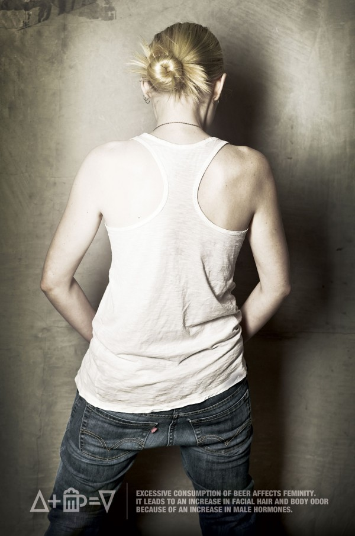
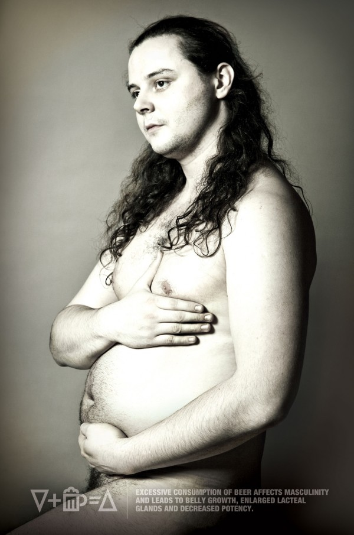

Сегодня суббота, а значит, налив в стакан виски и разбавив его кока-колой, можно расслабиться и почитать неторопливо новостные ленты.
После 22 часов в Кемерове виски уже с огнём не купить, зато пиво по-прежнему на каждом шагу и практически на любой вкус, кроме хорошего. Доступно всем от депутата до студента. Депутаты читают Навального, а студенты, по крайней мере московские — газету «Акция». Для этой газеты московское представительство рекламного агентства M & C Ssaachi разработало пару антипивных принтов.
Студент и студентка! Будьте внимательны!

Чрезмерное потребление пива влияет на женственность. Приводит к увеличению роста волос на лице и ухудшению запаха тела из-за увеличения мужских гормонов.

Чрезмерное потребление пива влияет на мужественность. Приводит к росту размеров живота, увеличению молочной железы и снижению потенции.
[poll id="14"]